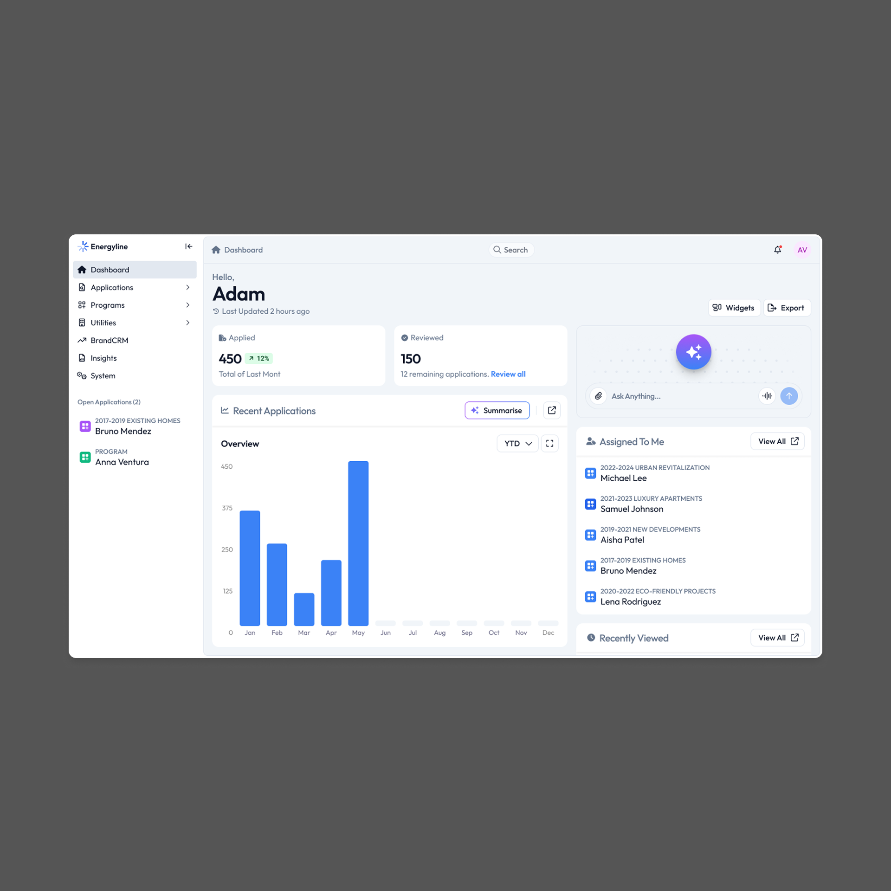
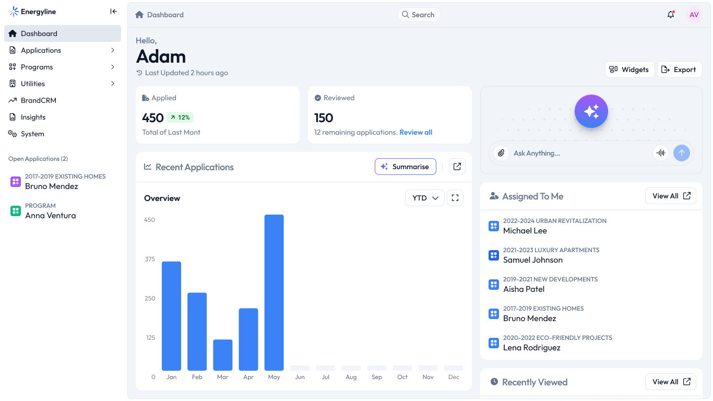
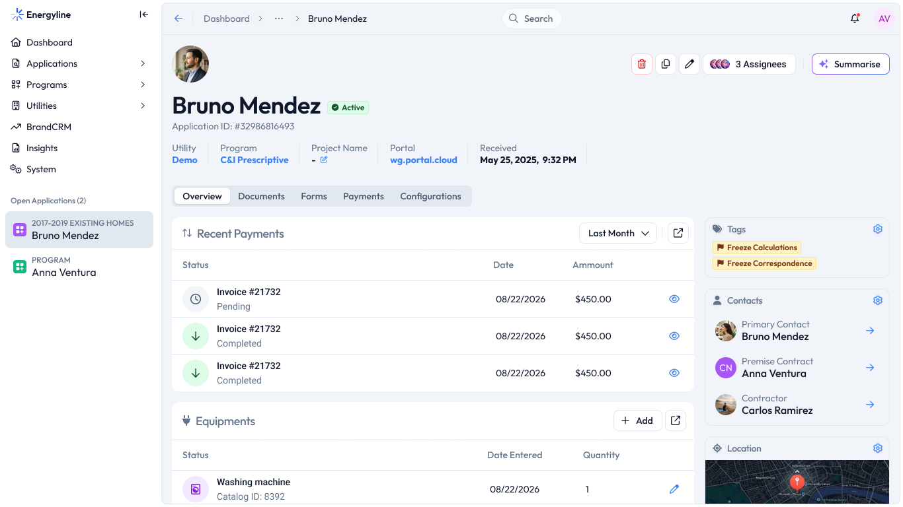
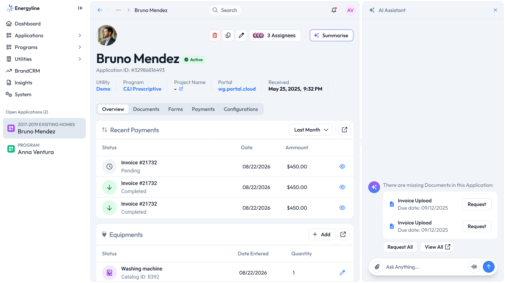
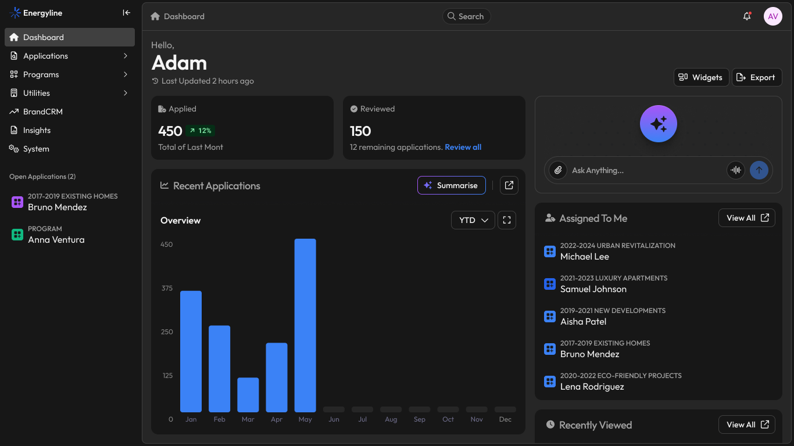
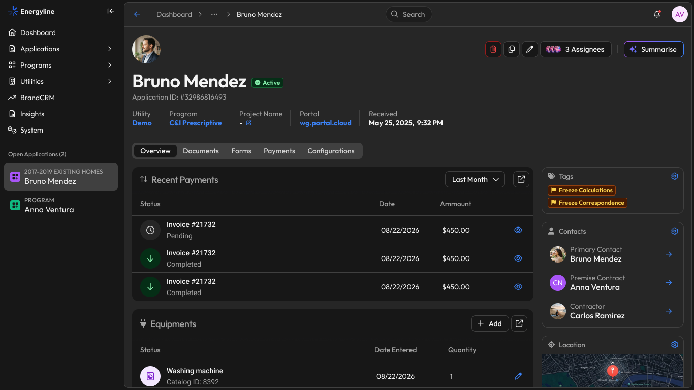
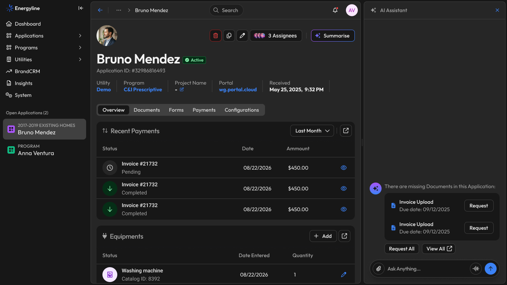
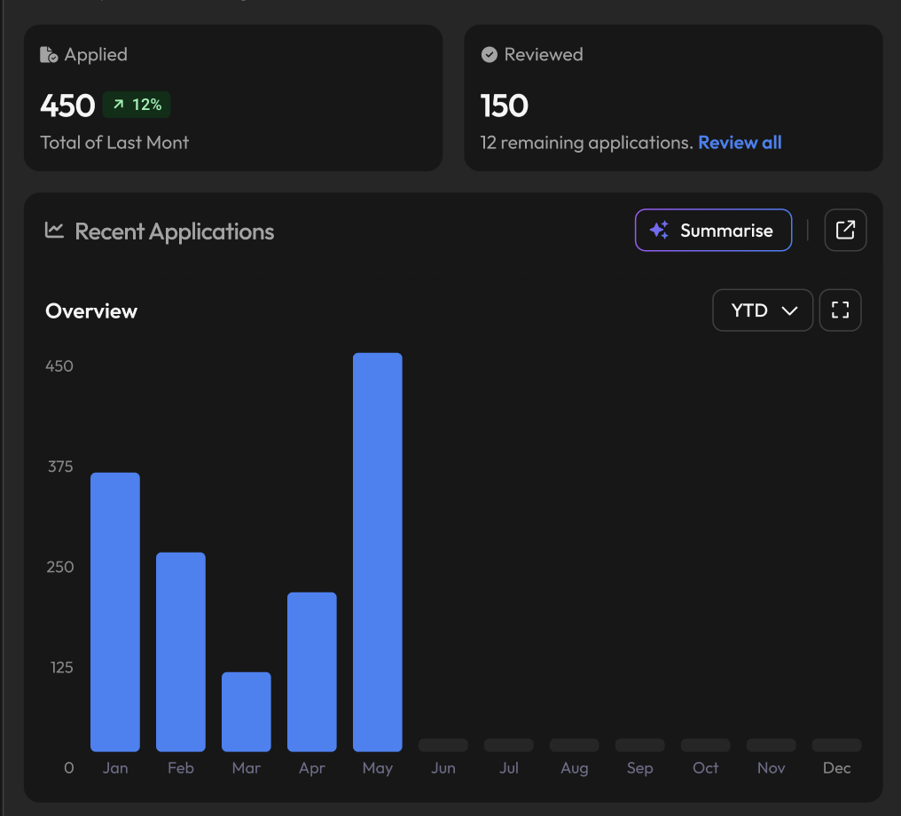
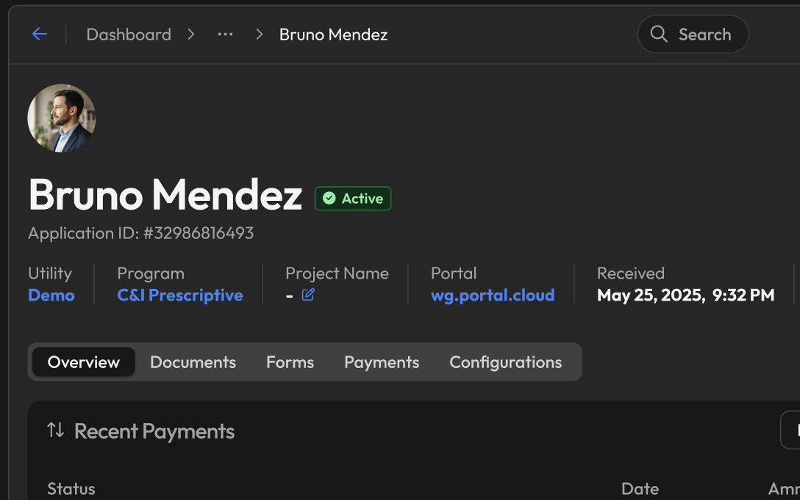
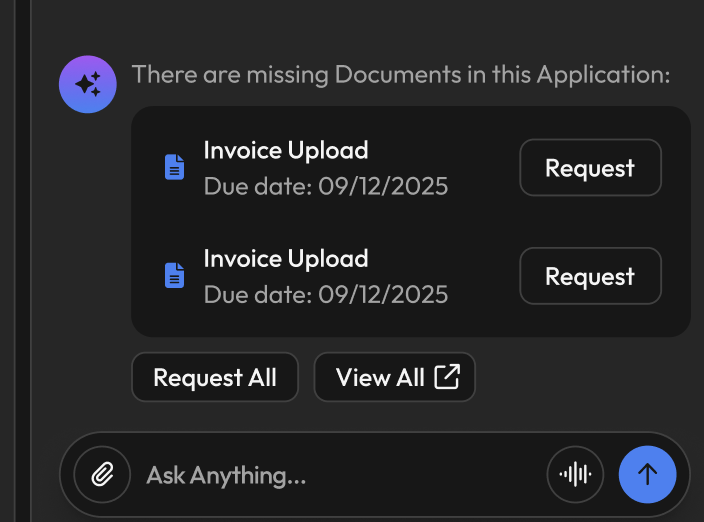

Emergn
Energyline Dashboard
Energyline is a dashboard redesign focused way to improve the internal teams management in energy-installation applications, review information, and identify next steps.
Role:
Product Designer
Tags:
Product Design
UI
Design Systems
The challenge
Making complex workflows easier to navigate
Fragmented information combined with multiple layers of information makes it harder to review applications, track progress, and identify what needs attention.
The goal was to help teams:
01
Identify priorities without searching across multiple views.
02
Understand application status and find relevant information quickly.
03
Overview the progress and status of applications at a glance.
The dashboard
Designing around visibility and action
Rather than adding more information to the interface, the idea was to focus on making existing information easier to understand and act on. Adding more visual appealing ways to present information.
To move towards that goal, the objectives were:
Prioritize what matters.
Bring key metrics, application statuses, and items requiring attention into a clear hierarchy.
Connect overview to detail.
Let users move from a high-level view to the information needed to review an application.
Support informed decisions.
Explore AI-assisted summaries that help users understand application details keeping the information accessible.

The application view
Balancing visibility with action
While the dashboard brings key metrics, application statuses, and relevant actions into one workspace, The application view is meant to provide a more detailed look at each application in block, generating a sumary with the essential and more important information.

Implementing AI
AI as a starting point, not the decision maker
Including an AI assistant was necessary to explores and generate concise summaries to help users understand applications faster. Original information remains accessible for verification, and decisions stay available to the user.
Incomplete, pending or conflicting data would need clear handling to avoid misleading summaries.

Theme modes
Building a consistent interface
Applying semantic tokens previously implemented and reusable components helped maintain consistency across the interface. The structure was built to support light and dark themes while keeping visual hierarchy and accessibility in focus.
Scroll to view all



In summary
Design decisions and trade-offs
01.
Prioritizing actionable information
I prioritized application status, key metrics, and items requiring attention over a purely informational dashboard.
Trade-off:
More information remains visible, but the hierarchy needs to prevent visual overload.

02.
Separating overview from detail
I split workload monitoring from application review, letting users move from a high-level overview to focused case information.
Trade-off:
A clearer hierarchy requires navigation between views, so key context must remain easy to find.

03.
Using AI to support review
I explored AI-generated summaries to help users understand application details without replacing the underlying data.
Trade-off:
Summaries can reduce reading effort, but introduce risks around missing context and accuracy. Users need access to source information and remain responsible for decisions.

Outcome
From fragmented workflows to unified experience
The redesigned dashboard and application views bring key metrics, progress, and actions together. Clearer hierarchy and AI-powered summaries help teams scan information, understand application status, and act with greater confidence.
Redesign at a glance:
2 Core Views
dashboard and application details
3 Key workflows
monitor, review, and resolve applications
1 AI assistant
for summaries and issue detection
1 Component system
built on Tailwind and shadcn
2
modes supported, including Dark Mode
1 Unified overview
bringing metrics, progress, and actions
Relevant Links
Other projects related to this work:
Contrast Tokens
An AI-powered tool that analyzes UI screenshots, identifies contrast issues, compares them against the design system, and proposes accessible design tokens to fix them.
Energyline Token Refactory
Renewing the tokens to improve consistency, accessibility and usability.
EnergylineTRM Usability Test
Turning usability research into clearer, more intuitive benchmarking workflows for Energyline.